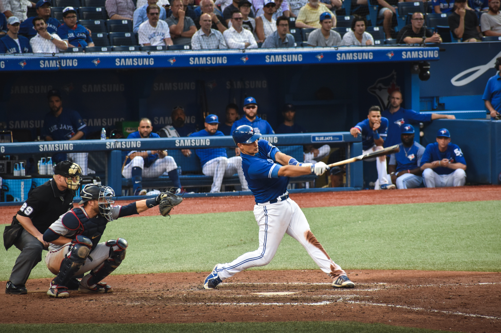

LG Twins (Korean: LG 트윈스) is a South Korean professional baseball team based in Seoul, South Korea. They are a member of the KBO League. The Twins play their home games at Jamsil Baseball Stadium, which they share with their rival, the Doosan Bears; the stadium is known as "Two families under one roof."
The LG Twins are one of the most popular baseball teams in Korea. They gained many fans in the 1980s–2000s, most of whom live in Seoul.
